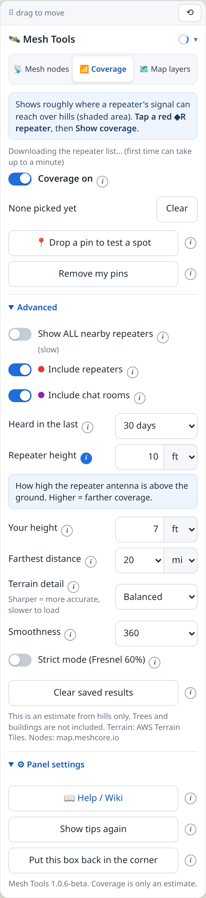

Browser add-on · version 1.6.3-beta
aprs.fi Mesh Tools
A small add-on, run by Tampermonkey, that adds MeshCore and Meshtastic radios, a hill-based coverage estimate, and map layer switches to aprs.fi. It is one panel, and it works on a phone.
Coverage is an estimate from the shape of the hills, plus a typical MeshCore radio. Trees and buildings are not included. Problems go to Issues on GitHub.
Mesh Tools is not affiliated with aprs.fi, MeshCore, Meshtastic, meshmap.net, or Amazon Web Services. The source is github.com/thescrawler/aprsfi-mesh-tools. License: MIT © 2026 thescrawler.
What the panel does
It only runs on aprs.fi pages. The panel has three tabs:
| Tab | What it does |
|---|---|
| Mesh nodes | Shows MeshCore and Meshtastic radios on the aprs.fi map, next to the normal APRS stations. MeshCore can be limited by type. Repeaters and room servers that have gone quiet get a gold ring. |
| Coverage | Shades roughly where a MeshCore repeater, or a spot you choose, can reach over the hills. Green is a strong guess, yellow is fair, and orange is weak. |
| Map layers | Hides clutter on the aprs.fi map, such as ships, planes, track lines, labels, or APRS objects by type. Also Winlink GPS reports and, if you turn it on, FT8 spots. Nothing on aprs.fi is deleted. FT8 downloads only after you tap Fetch FT8 now. |
Install
On a phone, Firefox for Android is the usual way. Copy this link, open Tampermonkey’s Utilities page, then use Import from URL.
https://raw.githubusercontent.com/thescrawler/aprsfi-mesh-tools/main/aprsfi-mesh-tools.user.js
On a computer you can use the one-click link: Install aprs.fi Mesh Tools. Then open aprs.fi. The panel appears in the bottom-right corner.
A Greasy Fork listing is planned. It is not published yet, so this page has no Greasy Fork install link. Tampermonkey checks for updates from the GitHub repository.
The full phone and computer steps are in Install Mesh Tools. New to the add-on? The project’s own page What is Tampermonkey? explains it in plain language.
On a phone

The picture is the coverage tab from the project guide. You can scroll inside the frame. Distances in Mesh Tools can be shown in miles or kilometers. Miles are the default.
Where the map data comes from
Mesh Tools only downloads public data. It does not upload information about you, and it has no account. The sites it contacts, named in the script, are:
| Source | Used for |
|---|---|
| map.meshcore.io | MeshCore nodes, and the repeater list for coverage |
| meshmap.net | Meshtastic nodes that reach the internet |
| AWS Terrain Tiles | Hill heights, only while computing coverage |
| PSKReporter | FT8 spots, and only after you tap Fetch FT8 now |
Pins, heights, and settings stay in Tampermonkey on that browser. The full note is Privacy and data sources.